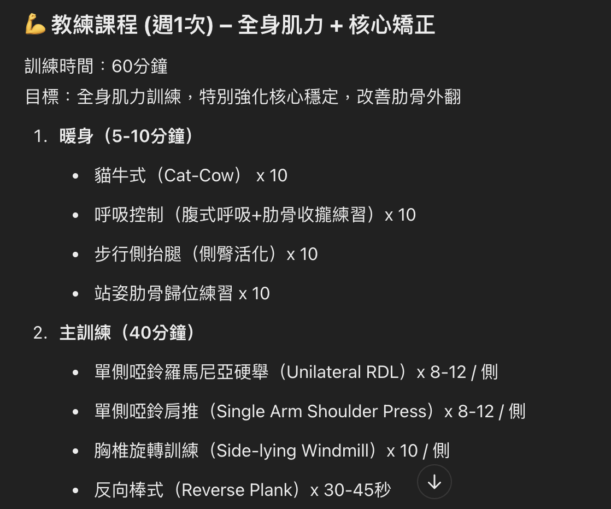
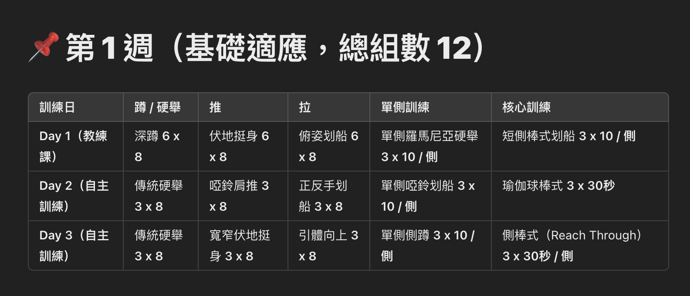
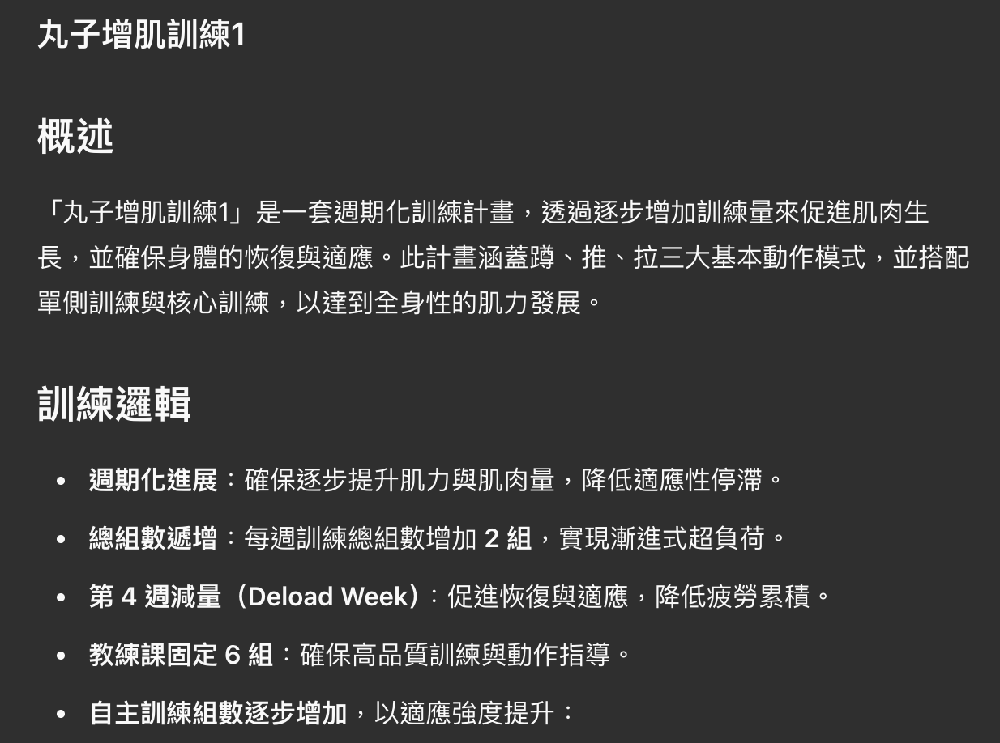

如何用 AI 讓肌力訓練課表設計速度提升 10 倍？我的 4 大步驟
以前開一份課表要 1～2 小時，現在 5～10 分鐘。教練怎麼用 ChatGPT 整理會員資料、微調課表，再把自己的邏輯存成可以重複用的「訓練模式」。
發表於 2025 年 2 月 25 日
現在我只需要 5～10 分鐘，就可以設計一份符合訓練邏輯、也符合會員狀況的訓練課表。這在以前需要 1～2 小時，透過 ChatGPT，我把時間縮短到 5～10 分鐘。
1. 肌力訓練是科學，課表設計是藝術，但現實是你沒時間
雖然肌力訓練的底層邏輯大致相同，但每個人的身體狀況、心理狀態及對訓練的耐受度不同，課表仍需要個別化調整。同樣一份課表，對 A 來說可能很有效，對 B 來說可能是一場災難。因此，私人教練通常需要花大量時間調整與設計個別化課表。
此外，你辛苦設計好的課表，可能會發現會員根本無法完成，或他不喜歡，又或是臨時受傷、生病，你就得重新修正課表。
「啊就修改就好，有什麼難的？」可能有些教練會這樣想。沒錯，如果你是超級資深的教練，已經累積了大量經驗，你可能可以憑直覺快速決定怎麼調整。但當會員數變多、時間壓力加大時，這種做法仍然難以維持。
私人課這麼貴，其實是有原因的。設計課表本身就非常需要花教練的腦力，加上每次上課還要調整課表，光這些事就可以耗掉我大半天的時間。
對某些會員來說，拿到一張專屬自己的課表，可以大大提升運動動機。即使他不一定會去做，光是我幫他做這件事，就能提高會員對教練的信賴，以及他想要運動的念頭。
然而，你很難對所有人都這樣做。因為，你沒時間……
讓設計課表這件事變得更簡單，我就更有餘裕去幫助更多人進入肌力訓練的世界，這才是我真正的目的。這也是我接觸 AI 後，瘋狂使用它的原因。
2. AI 幫我解決課表設計的 5 大困擾
以下是我過去在設計課表時，最困擾我的 5 個問題：
- 會員數越多，越難仔細調整每位會員的課表。我得很誠實地說，當你的會員數超過 20 位，除非你單身沒小孩，不然你真的很難每天都在思考：「我要怎麼調整這個會員的動作？嗯，換成單腳抬高蹲嗎？還是不要改動作，改次數就好？」
- 要符合肌力訓練的邏輯，每份課表需要花 30～40 分鐘思考與修改，有時甚至更久。我不是那種很有邏輯的教練，我的理化跟數學爛得可以。思考課表是我最痛苦的時刻。不是想不出來，而是我會在腦子裡一直跟自己對打：「這樣可以嗎？好像進展太快了？」「他不喜歡太操，那我是要減少重量還是減少組數？」光是腦內互打，就要死掉我一半的細胞。
- 會員實際執行時，可能做不完，或因生病受傷需要臨時調整。即使我練到可以在半小時內設計出一份課表，更常見的是「突發狀況」。訓練的底層邏輯一樣，不需要大改課表，但修修改改的過程，也很耗費我的精氣神。
- 課表調整多次後，容易忘記前面的進度。有些會員跟了你超過 2 年，你大概也會忘記他剛開始的身體狀況，和每次上課出現的情況。
- 學到新知識後，想應用到課表中，卻不確定怎麼整合。這是我最大的困擾。學了很多知識，能用上的很有限，甚至根本不知道怎麼用到會員身上。你可能要花好幾年，才會「頓悟」：「啊～原來是這樣啊～」但幾年的時間，可以讓一個原本充滿熱情的教練，撐不下去離開這個產業。這樣的例子，我聽得太多，也看得太多。
3. 我如何運用 AI 來設計課表？
第一步：提供會員的基本資料
這一步很關鍵，也是一般人與教練最大的差異。多數人可能只會輸入「我要增肌」「我要減脂」，但教練會提供更完整的資訊，例如：
- 目標：肌耐力訓練，8～12 週計畫
- 特殊條件：糖尿病、高血壓、需要減重
- 訓練頻率：自主訓練每週 2～3 次，每次 30 分鐘
- 可使用設備：自重訓練、彈力帶
- 情緒：不喜歡太操累，要注意休息時間
第二步：讓 AI 產生基礎課表並微調
AI 產出的第一版課表（圖一）通常無法直接使用，只能當大綱。你仍需要根據專業背景進一步調整，給它更多的要求跟資訊。

例如：「他一週每個動作要有 12 組的訓練量」「要有單側的訓練動作」「仰臥起坐不行，改成棒式」「做成表格，用週為單位」。
像範例中的會員有脊椎側彎，我可能要加強單邊訓練，但 GPT 給我一整個課表都是單邊訓練，那個會死人……
我必須微調：「不對，主要訓練都是雙邊，但每個課表可以加入一個單邊的訓練動作。」
最後，你會產出一個最符合你訓練邏輯、也符合會員需求的課表。整個過程不用超過 10 分鐘，你只需要講話就好。

第三步：把課表設計邏輯，整理成自己的訓練模式
調整到滿意後，記得請 GPT 把你給它的訓練指令，整理成你個人的「訓練模式」。
講完第一個會員的課表後，我就說：「把以上我給你的訓練指令，整理建立『教練增肌訓練 1』模式。」未來遇到類似的會員，只需要說：「請依照『教練增肌訓練 1』設計這個人的課表。」（圖三）
登！3 秒就能產生下一位會員的課表。即使還需要調整，調整的次數也會越來越少。

第四步：根據會員回饋持續優化
個別化課表最麻煩的就是修改。過去，我得在下班後一個個思考會員的進度與調整方式。
現在，我可以在課後直接「講給」ChatGPT 聽，請它記錄會員今天的狀況。下次上課，只要請 ChatGPT 整理會員的狀態，就能快速調整課表。我甚至可以請它列出這位會員一整年的身體狀況，讓會員知道自己這一年的進步。
4. 運用 AI 設計課表的心得
AI 無法取代教練，但能提升教練價值
AI 幫教練節省時間，但決策仍需要教練來做。「訓練是科學，開課表是藝術」，ChatGPT 只能輔助，無法取代教練的專業觀察。
上面說了很多 GPT 的好處，但它還是有「做不到」的事。它沒辦法幫你觀察會員的狀況，像是情緒或動作進步的變化，這些都必須靠自己。你還是得當輸入的那個人。
ChatGPT 可以很快地整理好你的思緒跟資料，但決定權還是在教練身上。
AI 讓課表設計更有效率，提升會員體驗
透過 ChatGPT，我縮短了課表設計時間，也提高了個人化程度，讓我的專注力更放在會員本人身上。我只需要專注在她今天的狀況，告訴 ChatGPT；後面的整理資料跟調整，都可以透過我跟 AI 的對話完成。
這讓我能真正把時間花在「幫助會員變得更好」這件事上。我甚至可以提供更多額外的價值，例如更快開出回家訓練課表，或是錄影給會員看動作；也可以更快把研習學到的資訊，應用到實際的課表跟教學上。
能活在 AI 的時代，我真的很幸運。
這篇對你有幫助嗎？